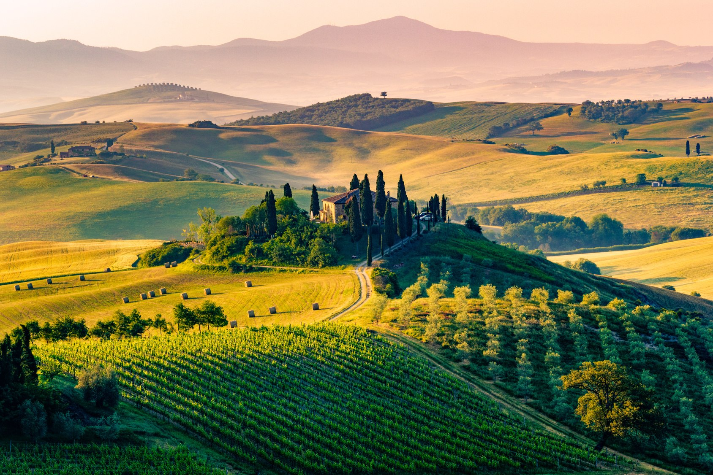
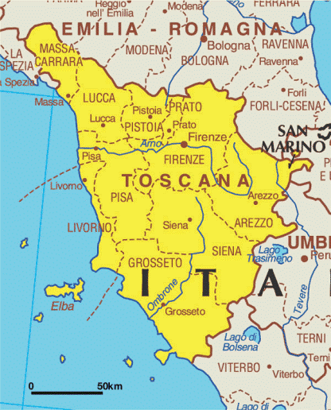
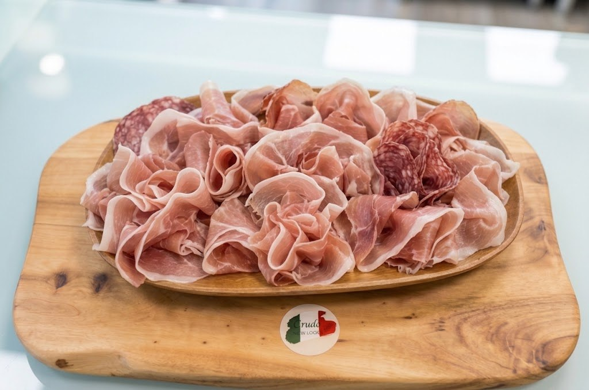
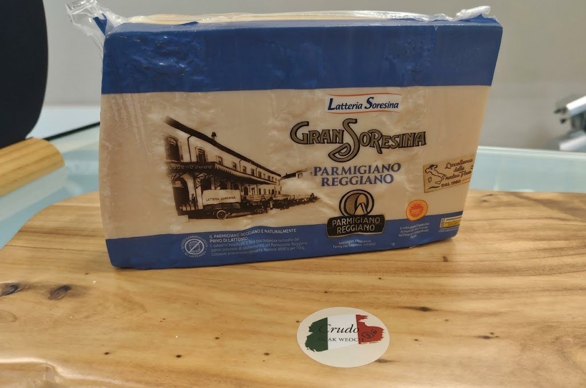
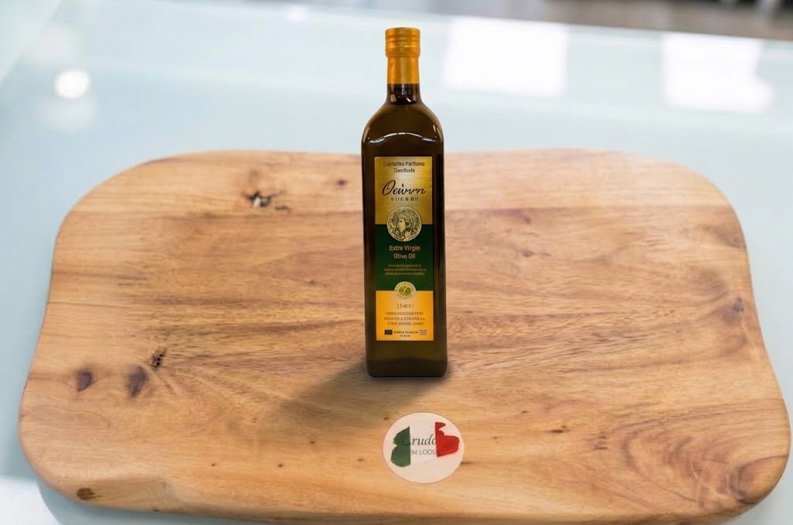

Szynki dojrzewające w górach Parmy, sery z mleka toskańskich pastwisk i oliwa tłoczona tam, gdzie od pokoleń robi się to tak samo. Wszystko to — w samym centrum Lublińca.
Nasza historia
Crudo Smak Włoch to niewielki sklep, który powstał z jednego prostego przekonania — że dobra szynka i prawdziwy parmezan nie muszą być zarezerwowane dla wakacji we Włoszech. Sprowadzamy produkty bezpośrednio od sprawdzonych producentów, dbając o to, by trafiały do Was w takiej formie, w jakiej Włosi sami by je wybrali.
To miejsce dla tych, którzy lubią wiedzieć, skąd pochodzi jedzenie na ich stole — i dla tych, którzy po prostu chcą poczuć na chwilę smak Italii, nie wyjeżdżając z Lublińca.


Toskania — jeden z regionów, z których czerpiemyCo znajdziecie na naszej ladzie
Trzy filary naszego sklepu — szynki dojrzewające, sery z różnych regionów Włoch oraz starannie wybrane dodatki, bez których żaden włoski stół nie jest kompletny.

01
Prawdziwe prosciutto crudo potrzebuje czasu — niektóre z naszych szynek dojrzewają nawet ponad dwa lata. Kroimy je cienko, na miejscu, tuż przed sprzedażą.

02
Od twardych serów dojrzewających latami, po świeże pecorino z truflą — każdy kawałek wybieramy tak, by trafił na Wasz stół w najlepszej formie.

03
Dopełnienie każdego włoskiego posiłku — oliwa, konfitury, oliwki i pieczywo, po które sięga się częściej, niż mogłoby się wydawać.
„Życie jest zbyt krótkie
na zwyczajne smaki"
— talerz, który mówi sam za siebie
Zajrzyjcie do środka
Krótki spacer po naszej ladzie — zobaczcie, jak wygląda miejsce, w którym wybieramy dla Was szynki i sery każdego dnia.
Zdjęcia
Co mówią klienci
„Świetny sklep, pyszne włoskie produkty i bardzo miła obsługa. Polecam! 🇮🇹"
„Super sklep, przemiła obsługa, polecam."
„Serdecznie polecam!"
Odwiedźcie nas
| Poniedziałek | 08:00–16:00 |
| Wtorek | 08:00–16:00 |
| Środa | 08:00–16:00 |
| Czwartek | 08:00–16:00 |
| Piątek | 08:00–16:00 |
| Sobota | 09:00–13:00 |
| Niedziela | Zamknięte |